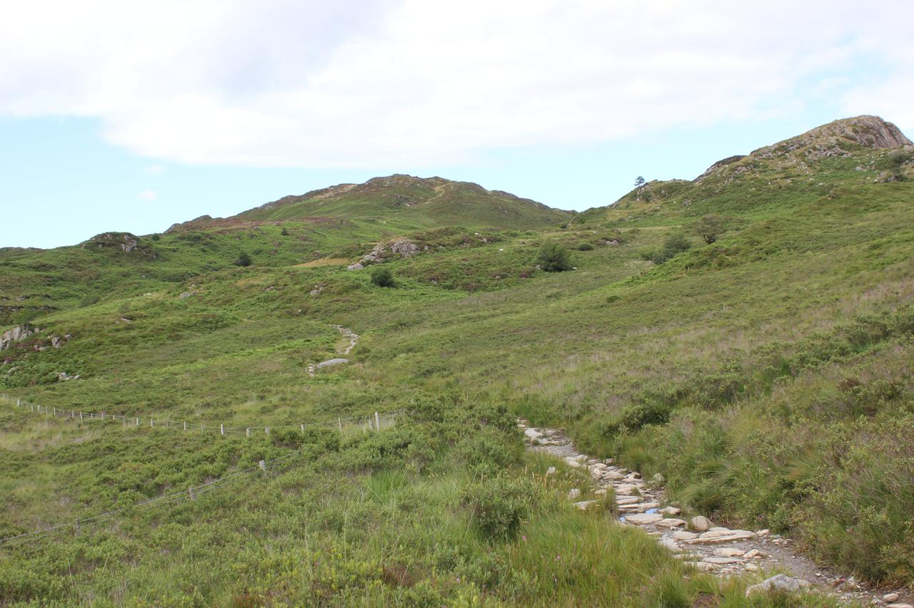
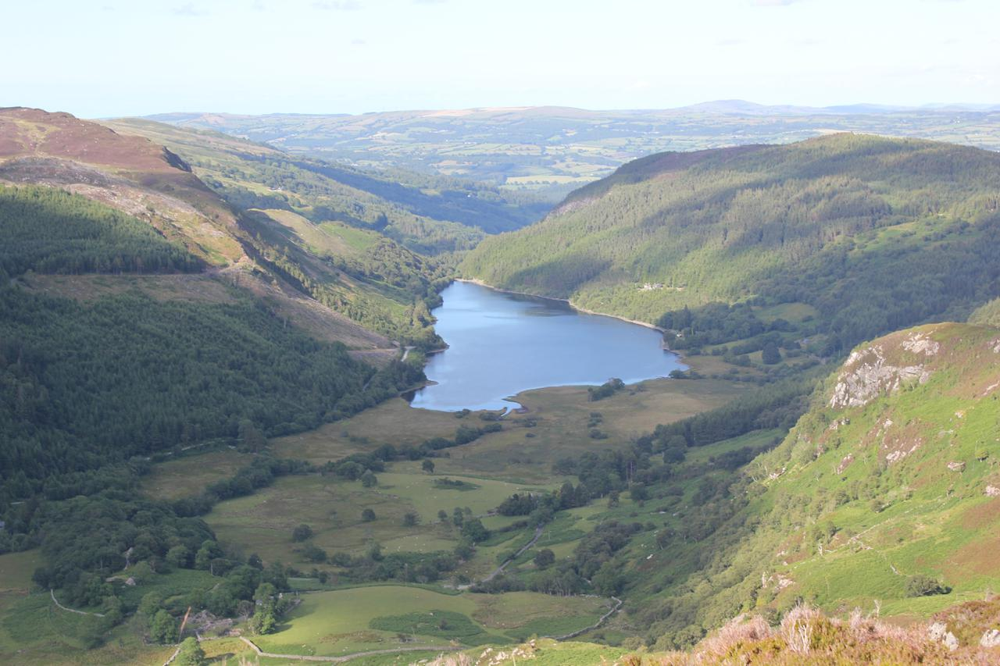
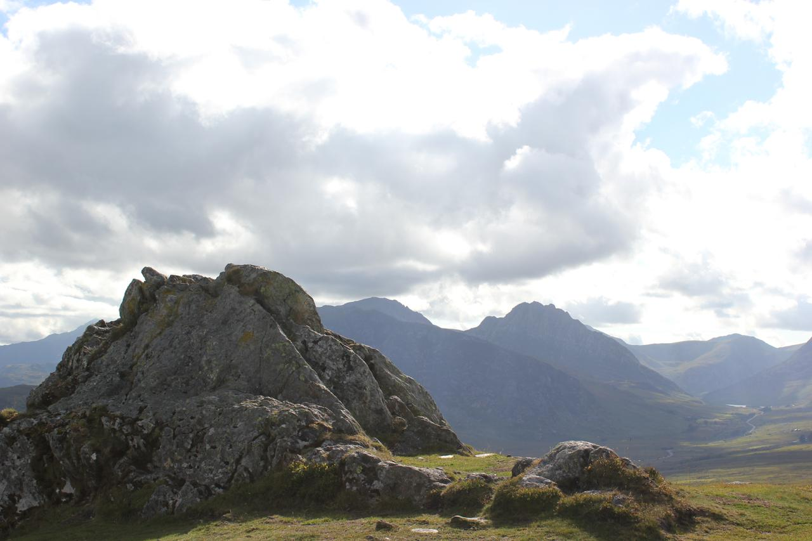
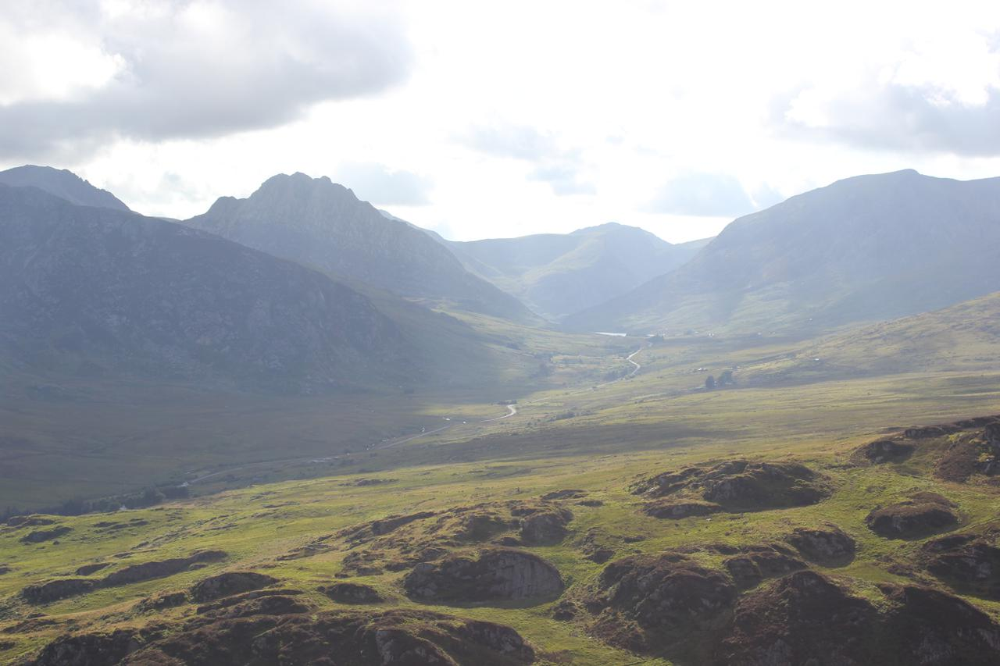
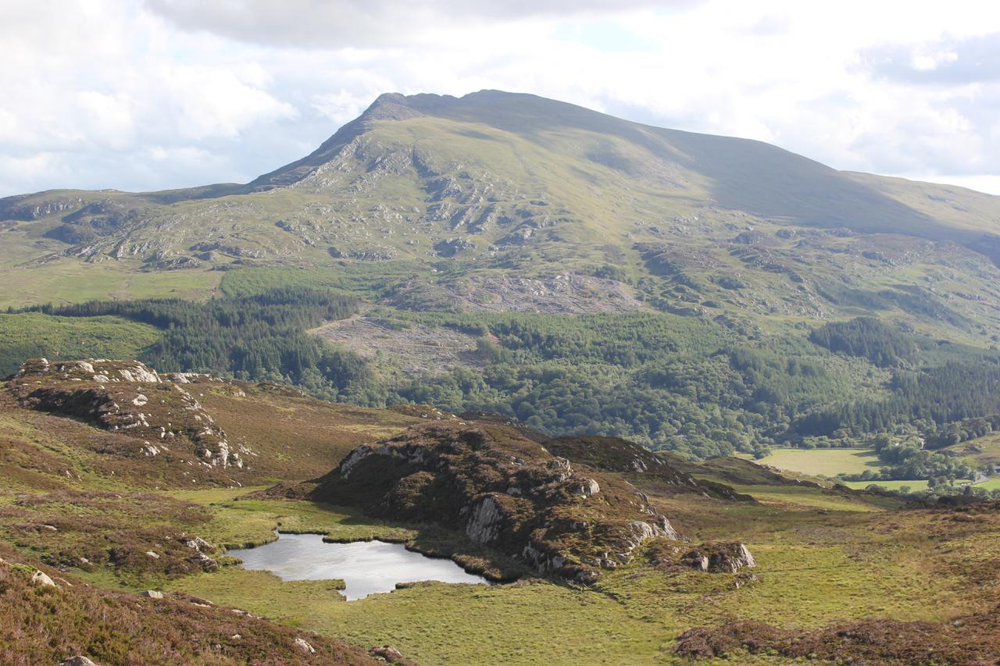
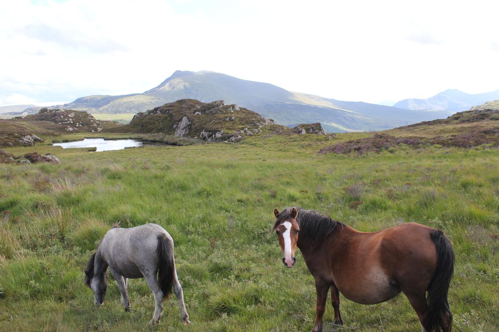
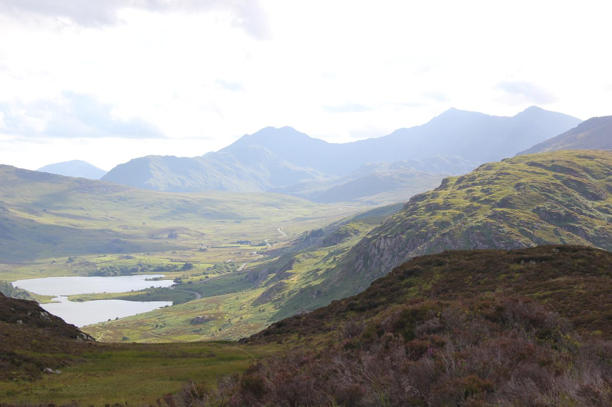

Crimpiau
Path up to col above Llyn Crafnant
{kind=link}
Two of my three children were away, so Anne and I decided to take our remaining daughter for a couple of days in North Wales. Neither of them like camping, so we stayed in the bunk room at the Bryn Tyrch in Capel Curig.
We arrived late afternoon and since it looked as though it was going to be a fine evening, so I decided to walk over Crimpiau. I did this walk with my son three years ago the last time we stayed at the hotel. However, I had forgotten to bring either my camera or phone, so wasn't able to take any photographs. This time I made sure that I had both of them with me!
Llyn Crafnant from Crimpiau
{kind=link}
Anne and Hannah wanted to go to Joe Browns in Capel Curig. I walked up with them and then crossed the style to start up the path towards Llyn Crafnant. The last time I had done the walk the weather had been quite drizzly, but today there were large patches of blue sky and broken cloud. It was about 4:30pm and we had booked dinner at the hotel for 7:00pm. I couldn't remember how long the walk had taken last time, but thought I would be able to get back for seven. In the event this was a bit optimistic and it was about 7:20pm! As anyone who has walked with me can testify, I have never really planned how long a walk takes. My stock answer is always "It will take as long as it takes". I just have an overall plan of what I want to do. On multi-day walks I just continue until I find somewhere nice to camp, I am too tired or it goes dark.
It seemed a long way to the col above Llyn Crafnant. It's not possible to see the lake from the col, so I carried on to a high point on a small spur that overlooked part of the lake. There were good views over to Creigiau Gleision. The last time I had climbed it was about 30 years ago in driving rain. I can remember it had lots of false tops and was boggy and heathery. I keep meaning to go back and climb it in good weather, but somehow have always been distracted by its nearby neighbours.
Tryfan and Bristly Ridge from Crimpiau
{kind=link}
I returned to the col and began the climb up Crimpiau. It's not possible to tell exactly where on the ridge the summit is from below, so I just followed the most obvious path hoping it would get me there. It seemed a long way before a final short steep pull landed me next to some rocks. These seemed to be the highest point on the ridge, although unlike most other Snowdonia peaks there was no cairn. From the top there were views along the Ogwen valley, over Capel Curig to Snowdon and to Cader Idris in the south. As is often the case the views from the smaller peaks are often better than from the high ones.
Ogwen Valley from Crimpiau
{kind=link}
I dropped down from the summit and followed the ridge all the way down to the small Llyn Coren. It is normally very boggy here. I remember going past it with John on my last visit and following a path that kept to the rocks above the boggy part. Luckily for me, it was dry today. I had a bit of trouble finding the path beyond the lake that descends back to Capel, but found it eventually without having to consult the map.
Llyn Coren and Moel Siabod
{kind=link}
At the bottom of the descent, I missed the short cut that goes directly down to the Bryn Tyrch, which I had taken with John last time and ended up back outside the cafe in Capel Curig. A final trot down the road into the bar, where a drink was waiting for me and I was only 20 minutes late.
A couple of wild ponies wanted their photo taken!
{kind=link}
I had been lucky with the weather. The next day it poured down all day. Anne and Hannah went to visit Bounce Below in the Llechwedd Slate mines at Ffestiniog. As someone who hates "attractions", theme parks and queuing for anything I wandered around the old slate workings near Tanygrisiau.
Llynnau Mymbyr and Snowdon
{kind=link}